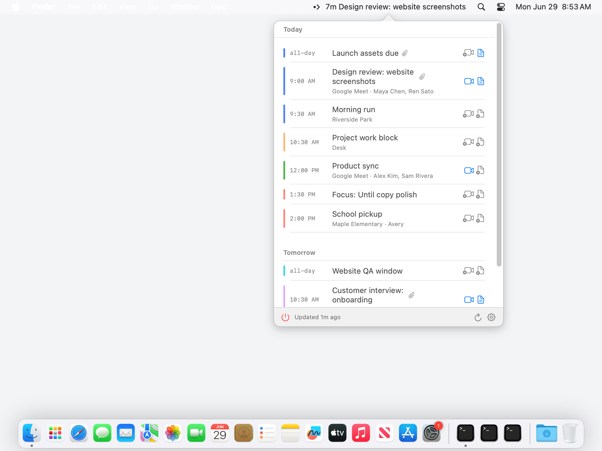

Glance
Your next event and start time stay in the menubar, updating from Google Calendar.
Google Calendar in your macOS menubar, with join links, notes, reminders, and filters close at hand.

Until keeps the next thing visible, reminds you before it starts, and puts the links you need one click away.
Your next event and start time stay in the menubar, updating from Google Calendar.
Get a native reminder before the call, then jump straight to the meeting link.
Share meeting notes with attendees in one click, then keep the document attached to the event.
Open the video call from the event row without digging through Calendar.
Hide low-signal calendars, all-day holds, and events that do not need your attention.
Until stays in the menubar, keeps the next meeting close, and leaves the rest of your calendar out of the way.